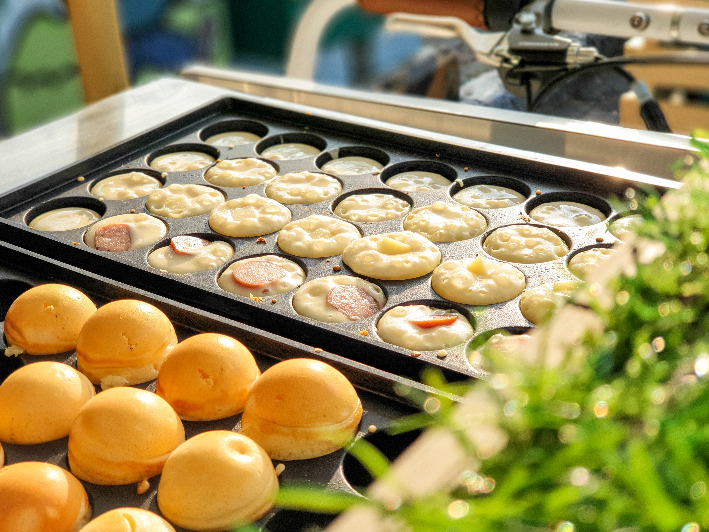
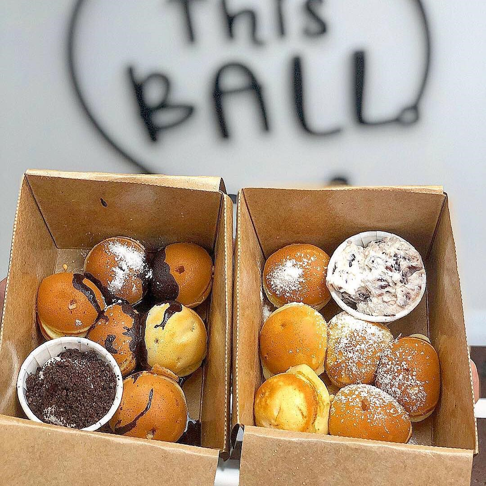

最近這種不定點不定時出沒在各個地方的小餐車真的好多，大家真的都好有創意呀，
創業的路辛苦阿，真的要多多支持，台灣才會越來越進步，沒想到吃個點心也可以這麼有感觸，
這間出沒在高雄街道上的「thisball手燒鬆餅球」，現點現做的鬆餅球超級可愛，你們吃過了嗎？
要沾醬要包餡通通有，任你挑選！純鮮奶製做，不加一滴水，味很濃郁唷👍
 
泰泰我要
御澗章魚燒
Pancake Ken’s kitchen
我的期末學習心得